GTN_Global 素材总览（20 张）
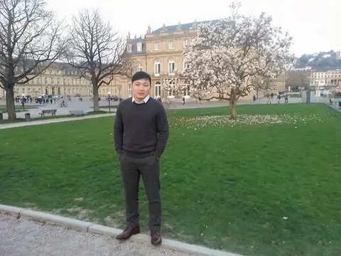
#01 · 1024×768 · 97KB
visit-01-2012-roto-stuttgart-germany.jpg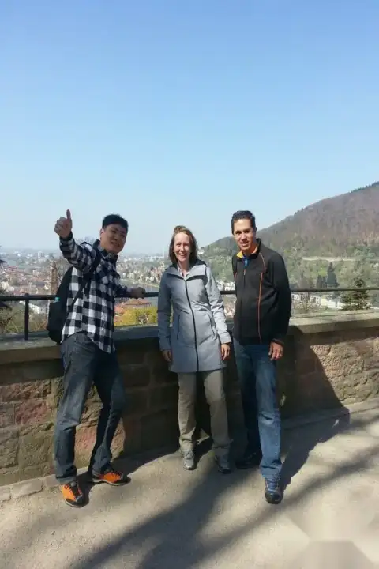
#02 · 800×1200 · 55KB
visit-02-2012-cologne-heidelberg-germany.webp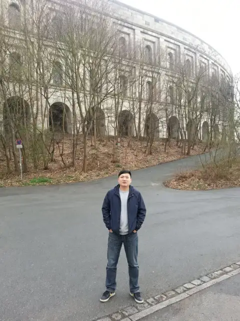
#03 · 900×1200 · 151KB
visit-05-2014-fensterbau-germany.webp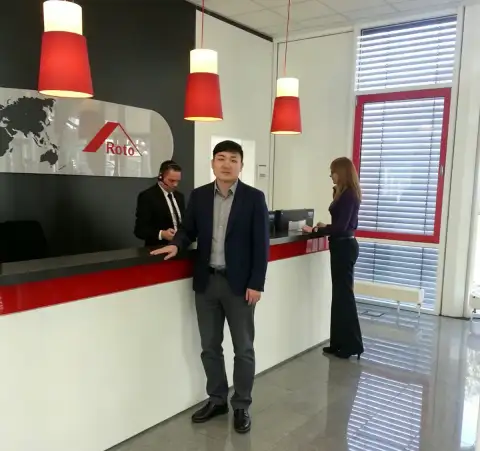
#04 · 1200×1128 · 56KB
visit-06-2014-stuttgart-germany.webp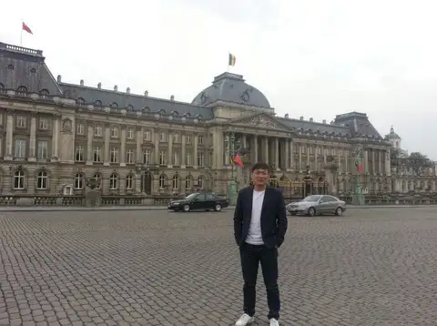
#05 · 1072×800 · 98KB
visit-07-2015-brussels-belgium.jpg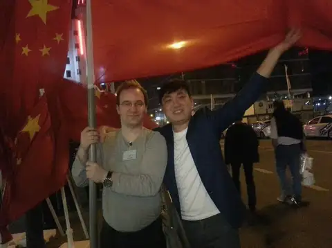
#06 · 1072×800 · 73KB
visit-07-2015-brussels-belgium2.jpg#07 · 1200×900 · 113KB
visit-11-2015-okinawa-japan.jpg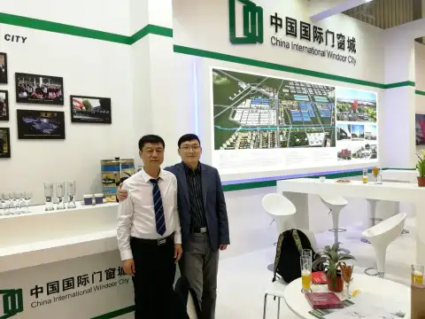
#08 · 1095×821 · 78KB
visit-12-2016-nuremberg-germany.webp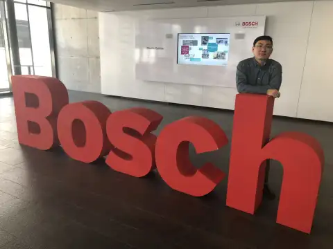
#09 · 1200×900 · 44KB
visit-14-2016-bosch-stuttgart-germany.webp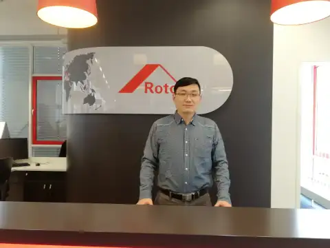
#10 · 1200×900 · 34KB
visit-16-2016-roto-stuttgart-germany.webp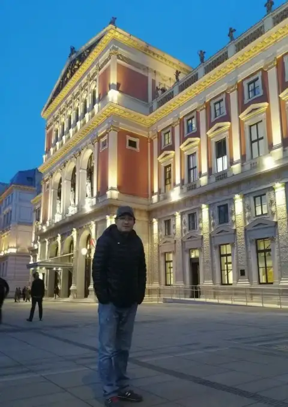
#11 · 850×1200 · 79KB
visit-18-2017-vienna-austria.webp#12 · 1200×896 · 70KB
visit-23-2017-bratislava-slovakia.webp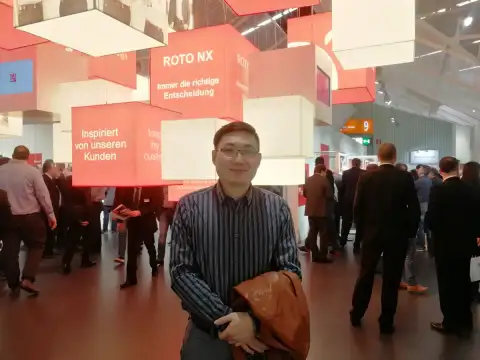
#13 · 1200×900 · 55KB
visit-26-2018-nuremberg-germany.webp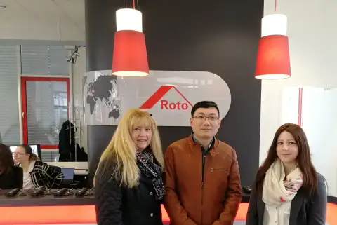
#14 · 1200×803 · 51KB
visit-28-2018-stuttgart-germany.webp#15 · 1080×810 · 86KB
visit-30-2025-hochiminh-vietnam.webp#16 · 900×1200 · 87KB
visit-31-2025-tiktok-kuala-lumpur-malaysia.webp#17 · 1200×900 · 84KB
visit-32-2025-johor-malaysia.webp#18 · 1095×669 · 54KB
visit-33-2025-beyondsoft-singapore.webp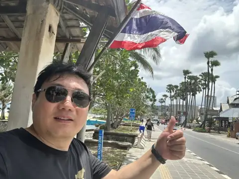
#19 · 1200×900 · 123KB
visit-34-2025-coohom-bangkok-thailand01-hero.webp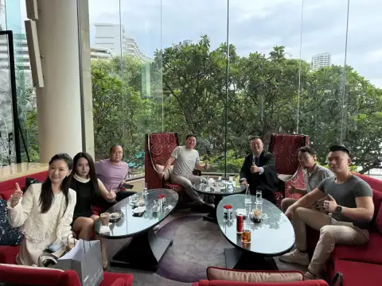
#20 · 1200×900 · 147KB
visit-34-2025-coohom-bangkok-thailand02.webp